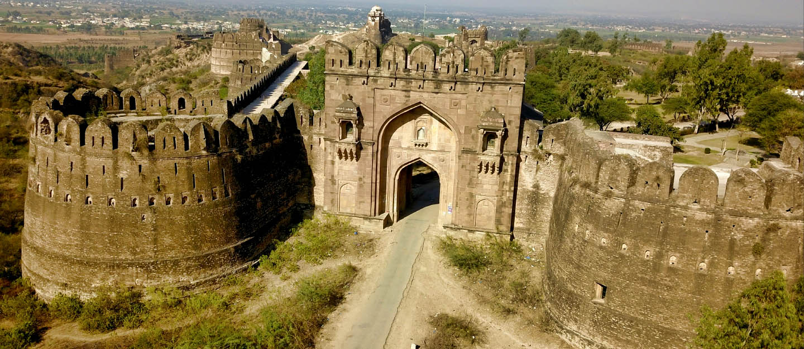
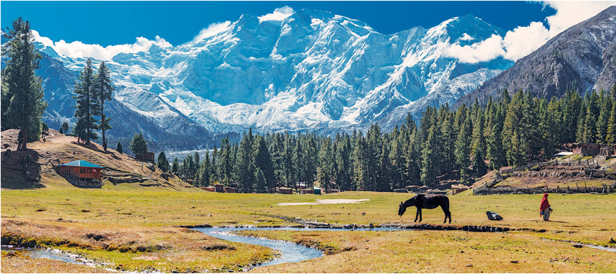
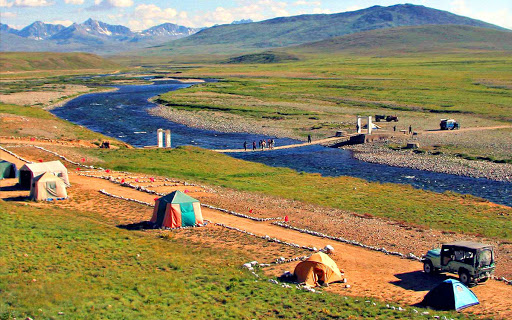
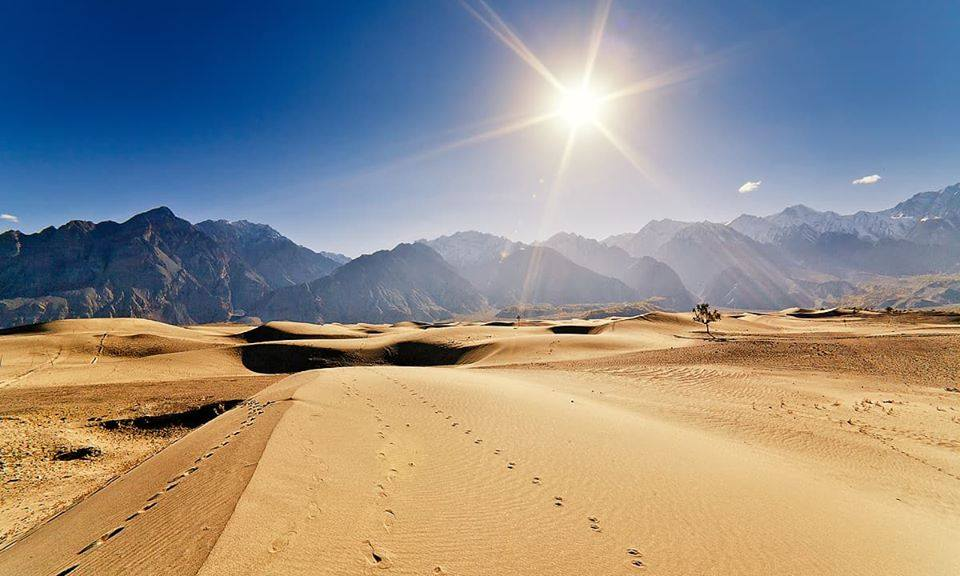
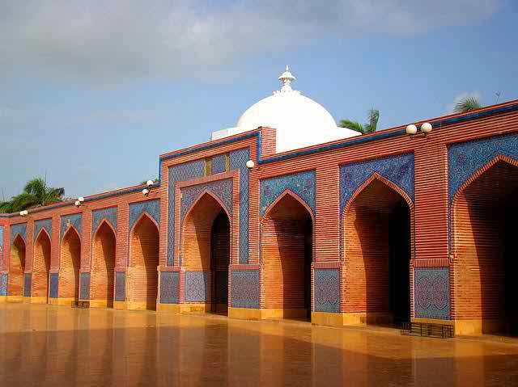
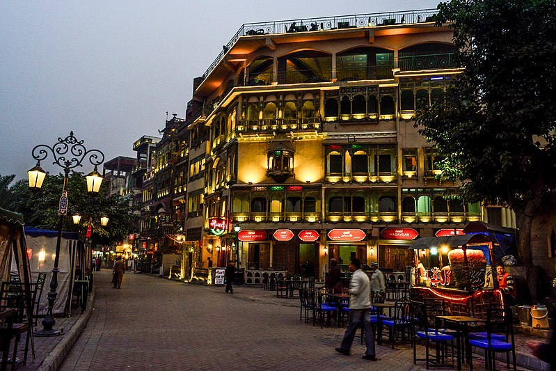

- Rohtas Fort
- Fairy Meadows
- Deosai Plains National Park
- Katpana Desert
- Shah Jahan Mosque
- Food Street Lahore
I. Rohtas Fort:
The Rohtas Fort is located near Jhelum in Punjab, which is about 4 hours from Lahore and 2 hours from Islamabad. The fortress is one of the largest in the Subcontinent and has remained in remarkable condition despite its age. Hours can be spent roaming around the massive structure, a beautiful relic that almost seems to transport visitors back in time. It’s easy to get lost amongst the walls and gates for an entire day. Keep in mind that the fort charges an entrance fee of 500 rupees for foreigners and 20 rupees for Pakistanis.

II. Fairy Meadows:
Though it has become a bit touristy (and pricey), Fairy Meadows is no doubt a stunner. The meadows offer an incredible view of Nanga Prabat, the world’s 9th highest mountain peak.Reaching Fairy Meadows is a bit of a challenge. The journey starts with a jeep ride across one of the most dangerous roads in the world and culminates with a 5 kilometre trek. It’s possible to rent a campsite, or you can bring your own equipment to enjoy a night or two basking in one of Pakistan’s most epic views. Currently, the price for a jeep into the meadows is around 8,000 rupees and walking the road is prohibited. Lucky it’s possible to split the cost with other travellers.

III. Deosai Plains National Park:
Deosai is often referred to as the roof of the world. And it kinda is. At 4,117 metres (13,497 feet), the massive plateau is the second-highest on the planet, and is only really accessible during summer. Sprawling emerald-green meadows, snow-capped peaks and glistening blue lakes greet visitors who make the journey to this beautiful spot. The Himalayan Brown Bear calls Deosai its home and has been spotted by many a visitor – watch out for them if you’re camping! The park charges an entrance fee of 1,000 rupees for foreigners and 40 rupees for Pakistanis.

IV. Katpana Desert:
Beautiful places in Pakistan truly cover every landscape imaginable. Including the Katpana Cold Desert. Though it has all the makings of a ‘warm’ desert, what makes the Katpana stand out is its altitude. It does, in fact, become covered with snow in the winter. Said to be the highest cold desert in the world, sand dunes at this altitude look truly unique. Very few countries can lay claim to such a rarity. Travellers can reach the Katpana Desert easily from Skardu, as it’s only about 30 minutes away. Don’t count on there being public transport, though.

V. Shah Jahan Mosque:
Thought all the Mughal relics were in Punjab? Think again! The Shah Jahan Mosque – also known as the Jamia Masjid – is located in Thatta, a town in Pakistan’s Sindh province. It’s widely known for having the most elaborate display of tile work in all of South Asia. Blue and sandstone colours adorn the interior of the mosque and are sure to wow all who visit. The mosque was commissioned by Shah Jahan when he sought refuge in Thatta back in 1647 and somehow remains in amazing shape today. Though Sindh might seem to be a far cry from the mountains, the immaculate artistry present here makes it one of the most beautiful tourist places in Pakistan.

VI. Food Street Lahore
Considered the oldest food street in Lahore, the history of Gawalmandi dates back to the pre-partition era as it was one of the first settlements outside the Walled City. Following the creation of Pakistan, a number of families who migrated from Amritsar and other parts of Indian Punjab settled in this area and brought with them their own traditional dishes. These generations-old recipes have since become the highlight of Gawalmandi Food Street in Lahore.Given its long history and high-quality food, this food street has always been particularly famous among locals and tourists alike. Although the newer food streets in the city have gained immense popularity in the last couple of years, the vibrant Gawalmandi is still one of the most crowded places in Lahore.
